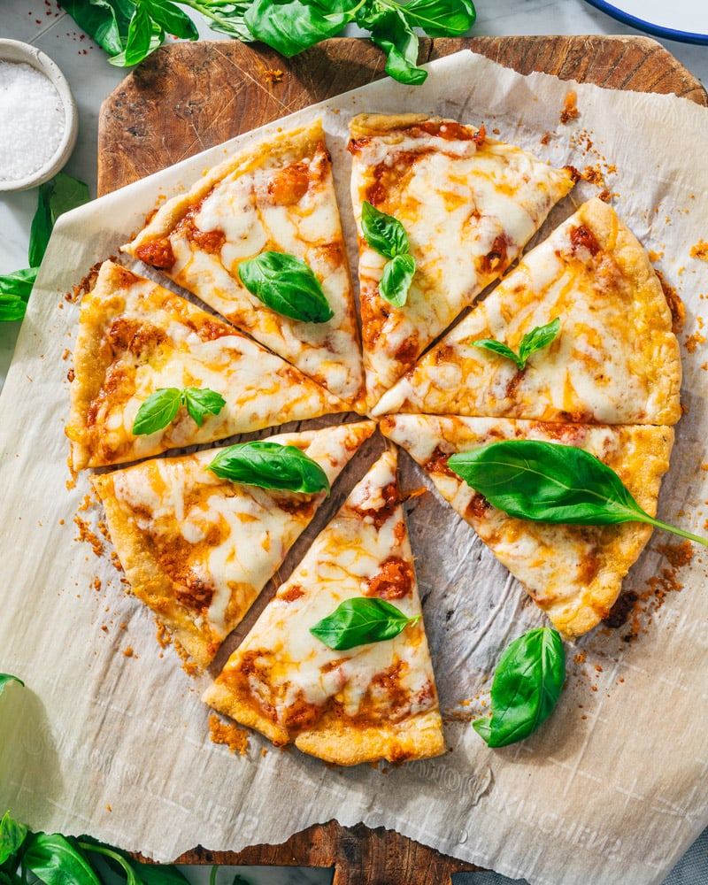

Gulten free pizza dough

Ingredients in this gulten free pizza dough recipe
- Gulten free banking flour
- Active dry yeast
- Sugar
- Xanthan gum
- Garlic powder
- Dried, oregano
- Kosher salt
- Warm water
- Olive oil
Ingredients
For the pizza dough
- 225 grams 1-to-1 gulten free baking flour(1 ½ cups)
- 1 tablespoon active dry yeast
- ½tablespoon sugar
- ¾teaspoon xanthan gum
- ½ teaspoon garlic powder
- ½ teaspoon dried oregano
- ½teaspoon Kosher salt
- ¾cup warm water
- 1 tablespoon olive oil